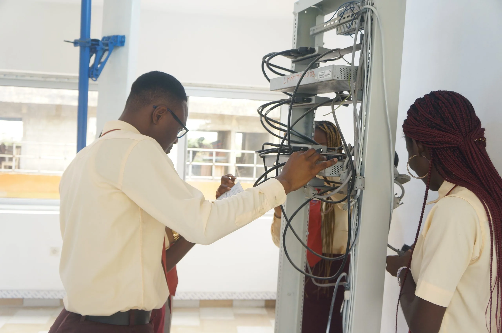

Sciences et Techniques
Réseaux Informatiques et Télécommunications
Licence & Master3 ans (L) / 5 ans (M)
Formation de cadres techniques capables d'exercer les métiers liés à l'installation, la gestion, la sécurisation et la maintenance des réseaux. Tous les types de réseaux sont concernés : réseau de transmission, RTC, réseaux mobiles (GSM), réseaux de données (LAN, WAN, Ethernet, IP, QoS), réseaux d'accès haut débit (ADSL, SHDLS, VDSL), FTTH et accès fibre optique, Voix sur IP, Télévision numérique.
Débouchés
- Administrateur de réseaux
- Responsable d'exploitation
- Responsable maintenance réseau
- Architecte systèmes de communications
- Ingénieur télécoms
- Consultant sécurité réseau
Matières & matériel
Matières : Fibre optique, Transmission, Commutation Téléphonie, Réseaux mobiles (GSM), LAN, WAN, ADSL, Ethernet, Internet, Voix sur IP, Télévision numérique
Matériel : Salle de TP réseaux, ateliers de soudure fibre optique, salle informatique de 50+ PCs, Internet en libre accès 24h/24